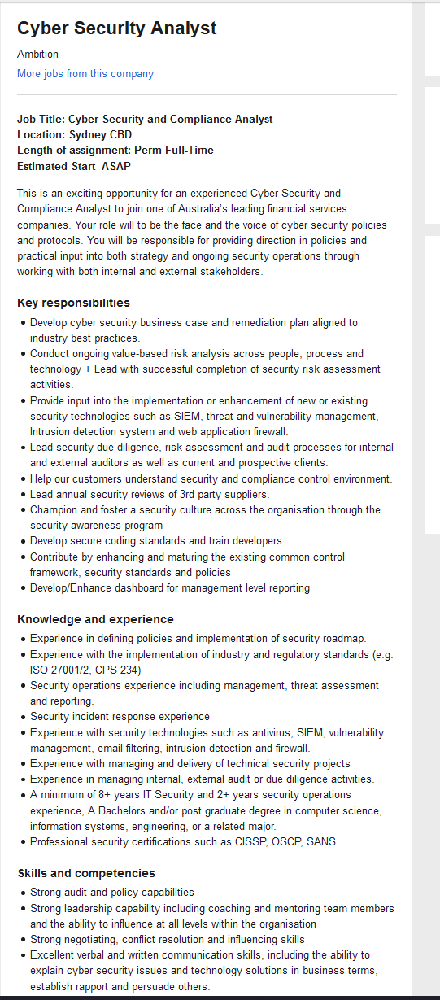

Dream Job
My Dream job would be a cyber security analyst, not only does this job title sound cool it seemed to be fitting for me given that a lot of the skills I have learned throughout my life are transferable to this job, such as, having strong leadership capabilities, mentoring, and coaching others. Having the ability to influence others, having good negotiating, and conflict resolution skills. The qualifications, on the other hand, I have none of. This will be what I need to progress towards for the next 8+ years of my life before this job becomes anywhere near attainable. Examples of these qualifications consist of, attaining a Certified Information Systems Security Professional or CISSP, which is a stand-alone information security certification granted by the International Information System Security Certification Consortium, also known as (ISC)². Passing this exam will prove that I ‘can effectively design, implement, and manage the best-in-class security programs’ (ISC² 2020). Knowledge in the software SIEM, Security Information and Event Management. ‘SIEM is an approach to security management that combines SIM (security information management) and SEM (security event management) functions into one security management system’ (TechTarget. 2020, para. 1.). SIEM is used to collect relevant data from multiple sources and identify deviations and then take appropriate action. I will also need experience in working with security technologies such as anti-virus, vulnerability management and firewalls. These will be attained throughout my experiences working in the industry.
My plan firstly will be to get a job in the cyber security industry and to keep studying the Bachelor of Information Technology. Once I have completed the Bachelor's I will then move on to the Masters in Cyber security, this will help me attain these qualifications and experiences, also learning and taking extra courses like the CISSP on the side of studying the Masters will help me achieve this job goal. I am aware that this is a very intensive process and will take a long time to achieve these degrees and qualifications, but I am driven by wanting to learn these new systems and have a great deal of interest in this industry, and we all have nothing but time to learn.
Link to Cyber security analyst 